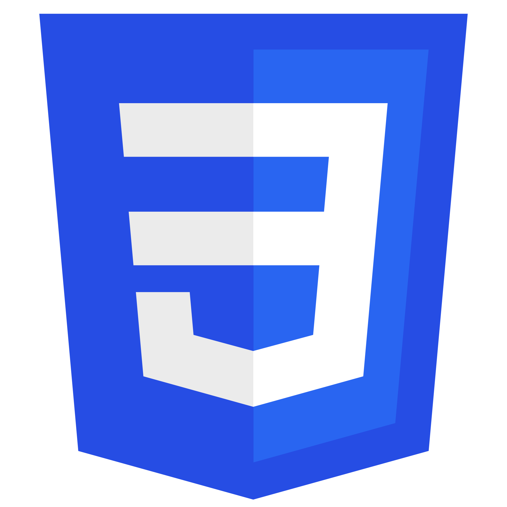

Education
Semarang State Polytechnic
Bachelor of Applied Technology Engineering of Telecommunication Engineering
2023-2027
Semarang State Vocational High School Number 5
Computer and Network Engineering
2020-2023
Skills
C++
C

Python

FreeRTOS
HTML

CSS
JavaScript
Linux

Cisco IOS

Mikrotik RouterOS

Project
IoT Pengairan Taman Otomatis Berbasis NodeMCU

IoT Pengairan Taman Otomatis Berbasis NodeMCU adalah sistem pintar yang dirancang untuk mengotomatisasi proses penyiraman taman menggunakan teknologi Internet of Things (IoT). Sistem ini dilengkapi dengan fitur RTC (Real-Time Clock) untuk penjadwalan, Blynk untuk monitoring dan kontrol jarak jauh, solenoid valve untuk mengatur aliran air, sensor kelembaban tanah untuk mendeteksi kebutuhan penyiraman, serta LED RGB indikator yang memberikan status visual sistem.
IoT Deteksi Awal Banjir berbasis ESP 32

IoT Deteksi Awal Banjir Berbasis ESP32 adalah sistem pintar untuk memantau dan memberikan peringatan dini potensi banjir menggunakan teknologi Internet of Things (IoT). Sistem ini menggunakan sensor ultrasonik (HC-SR04) untuk mengukur ketinggian air, layar OLED untuk menampilkan data secara real-time, dan fitur notifikasi darurat melalui grup Telegram jika air melebihi batas aman. Sistem juga dilengkapi LED RGB dan buzzer sebagai indikator visual dan audio, serta terintegrasi dengan aplikasi Blynk untuk monitoring dan kontrol jarak jauh.
Personal Website menggunakan HTML, CSS, dan JS

Personal Website menggunakan HTML, CSS, dan JavaScript adalah platform sederhana namun menarik untuk menampilkan informasi pribadi, portofolio, dan kontak. Dibangun dengan HTML untuk struktur konten, CSS untuk desain visual yang responsif, dan JavaScript untuk menambahkan interaktivitas, website ini dirancang agar mudah diakses dan memberikan pengalaman pengguna yang optimal.